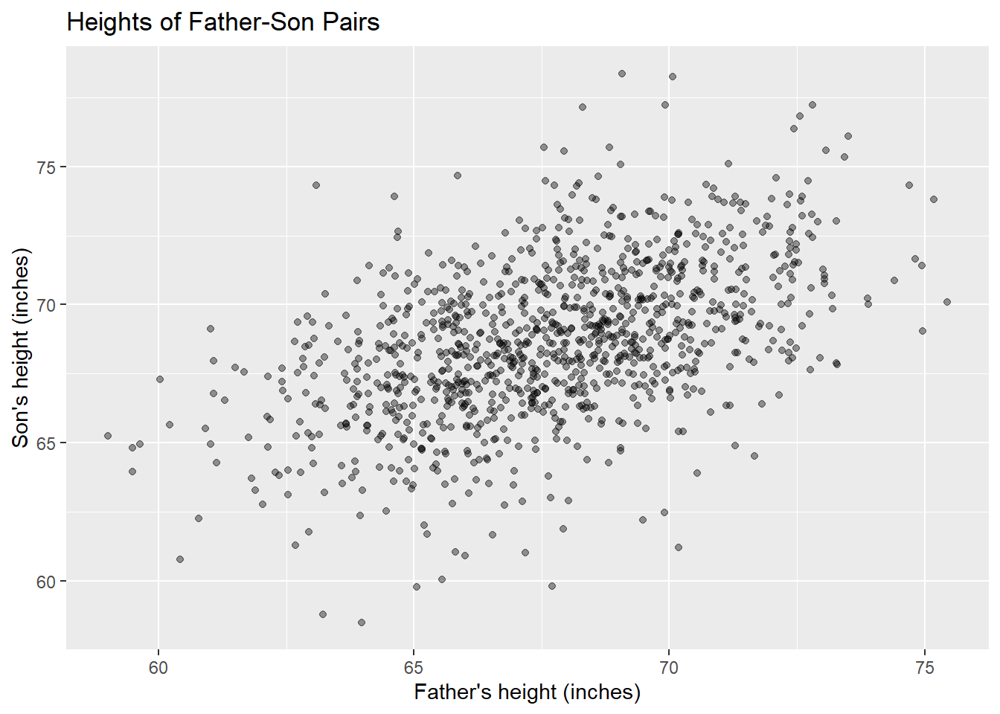
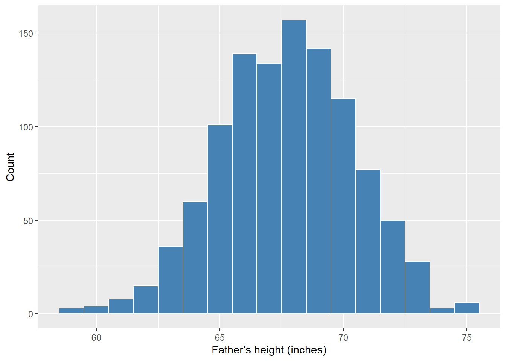
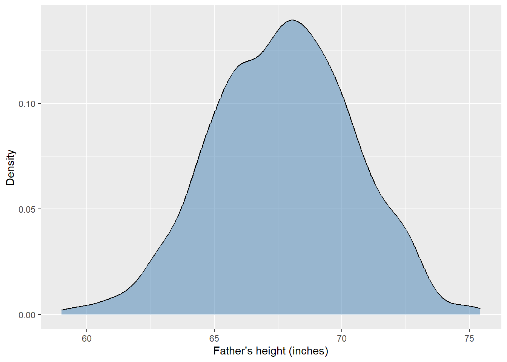
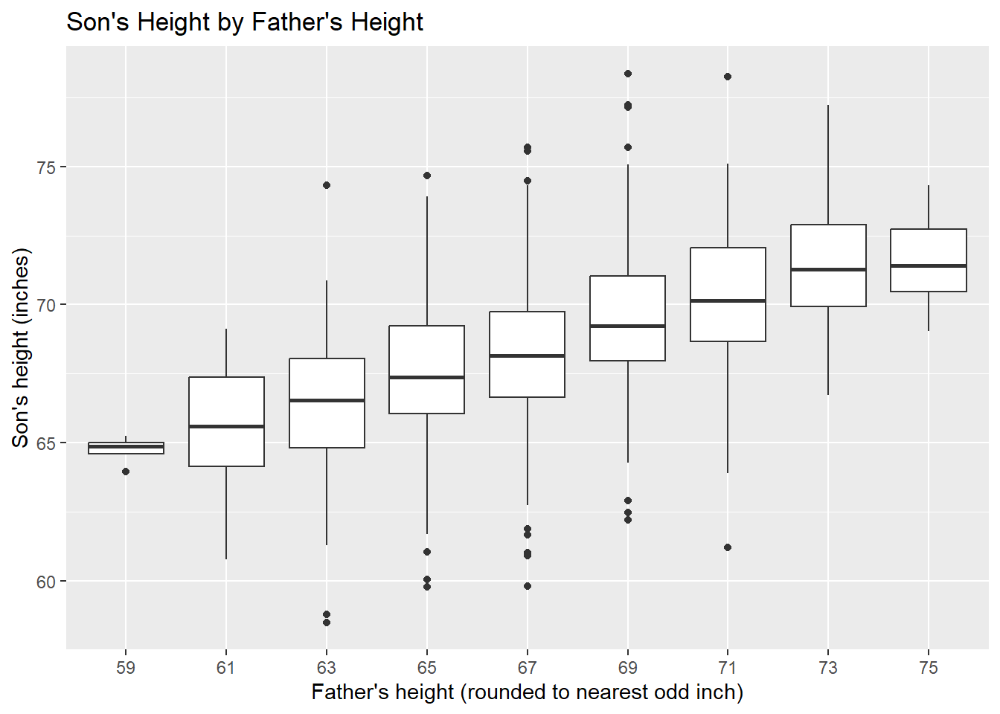
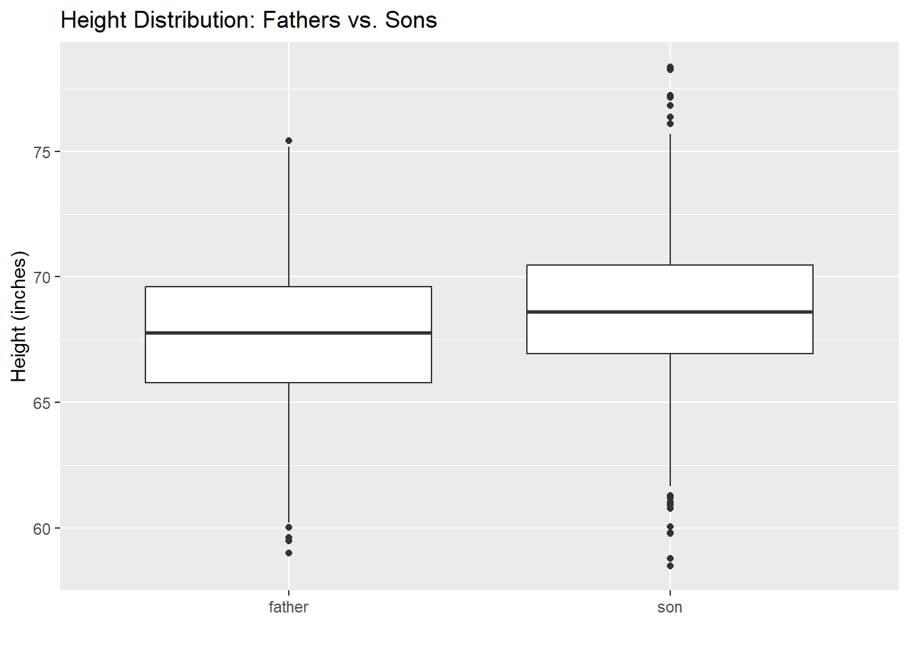
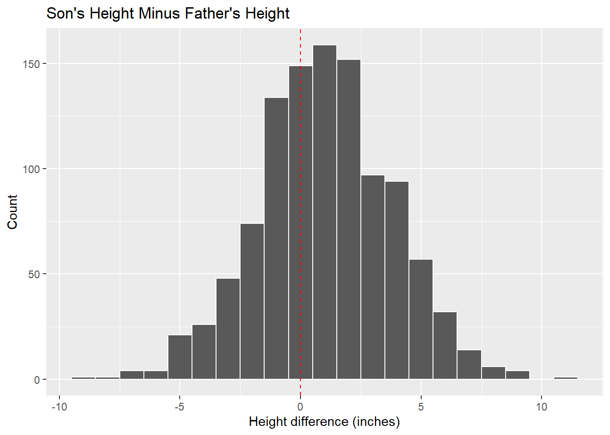

1 Exploratory Data Analysis
1.1 What is Exploratory Data Analysis?
Exploratory Data Analysis (EDA) is an approach to data analysis advocated by John Tukey, a leading American statistician of the 20th century. In his 1977 book of the same name, Tukey argued that statisticians had become too focused on formal inference—hypothesis tests, confidence intervals, p-values—at the expense of simply looking at data. EDA is the corrective: an emphasis on visualization, summary, and the iterative development of questions about what the data might reveal.
Tukey contrasted EDA with what he called “confirmatory data analysis” (CDA). Confirmatory analysis begins with a hypothesis and asks whether the data support or refute it. Exploratory analysis begins with data and asks what patterns, anomalies, or relationships might be present. The difference is one of emphasis rather than exclusion: a complete analysis typically involves both exploration and confirmation, and EDA includes models suggested by data.
EDA in machine learning
Understanding the data before modeling. What variables are available? What are their types (numeric, categorical, text, date)? How are they distributed? Are there missing values, outliers, or obvious errors? Answers to these questions inform every subsequent modeling decision.
Generating hypotheses. Patterns discovered during exploration become candidates for formal modeling. A scatter plot might suggest a linear relationship; a histogram might reveal a bimodal distribution requiring separate treatment of subgroups.
Diagnosing models. After fitting a model, EDA methods help assess whether the model captures the structure in the data. Residual plots, for example, can reveal systematic patterns that the model has missed.
Communicating findings. Visualizations and summaries developed during exploration often become the basis for communicating results to stakeholders who may not follow the technical details of model fitting.
The EDA mindset
EDA is not a single technique but a mindset: a willingness to look at data from multiple angles, to transform variables, to compare subgroups, and above all to ask questions.
1.2 Data as a Sample from a Population
A useful mental model for EDA treats the data at hand as a sample drawn from a larger population. The population is the complete set of cases we care about—all possible customers, all manufacturing runs, all images of a certain type. The sample is the subset we actually observe.
This framing matters because our goal is usually to learn something about the population, not just to describe the sample. When we compute a sample mean or fit a regression line, we hope these quantities approximate corresponding population quantities. EDA helps us assess whether the sample is likely to support such generalizations: Is the sample large enough? Are there subgroups that behave differently? Are there outliers that might distort our summaries?
Even when the distinction between sample and population is blurry—as when we have data on all transactions in a database—the population framing remains useful. We can think of the observed data as a sample from a hypothetical population of transactions that could have occurred under similar conditions, and ask whether patterns in the data reflect stable features of the underlying process.
1.3 Central Value and Dispersion
Two fundamental questions arise for any numeric variable:
- What is a typical value? This is the question of central tendency or location.
- How spread out are the values? This is the question of dispersion or scale.
Each question admits multiple answers, and the choice among them is itself an exploratory decision.
1.3.1 Measures of Central Tendency
The arithmetic mean (average) is the sum of values divided by the count:
\[ \bar{x} = \frac{1}{n} \sum_{i=1}^{n} x_i \]
The mean has attractive mathematical properties—it minimizes the sum of squared deviations—but it is sensitive to extreme values. A single outlier can shift the mean substantially.
The median is the middle value when observations are sorted. Half the observations fall below the median, half above. The median is robust: it is largely unaffected by outliers. For skewed distributions (e.g., income, home prices), the median often provides a more representative “typical” value than the mean.
The mode is the most frequently occurring value. For continuous data, the mode is often estimated as the peak of a density estimate. A distribution may have multiple modes, suggesting the presence of distinct subgroups.
1.3.2 Measures of Dispersion
The standard deviation measures the typical distance of observations from the mean:
\[ s = \sqrt{\frac{1}{n-1} \sum_{i=1}^{n} (x_i - \bar{x})^2} \]
Like the mean, the standard deviation is sensitive to outliers—extreme values inflate the squared deviations.
The interquartile range (IQR) is the difference between the 75th percentile (third quartile, Q3) and the 25th percentile (first quartile, Q1). The IQR measures the spread of the middle 50% of the data and, like the median, is robust to outliers.
The range (maximum minus minimum) is simple but highly sensitive to outliers.
1.3.3 Choosing Among Summaries
The choice between mean and median, or between standard deviation and IQR, depends on the distribution’s shape and the analyst’s purpose. For symmetric distributions without outliers, mean and median are similar, and the standard deviation is a natural measure of spread. For skewed distributions or data with outliers, the median and IQR provide more stable summaries.
EDA often involves computing both sets of summaries and comparing them. A large discrepancy between mean and median, for example, signals skewness or outliers and warrants further investigation.
1.4 Questions Drive the Analysis
EDA is fundamentally question-driven. The analyst brings questions to the data, and the data suggest new questions in return. This iterative cycle distinguishes exploration from rote application of a fixed procedure.
Some questions are standard starting points for any data set:
- What is the distribution of each variable? Is it symmetric or skewed? Unimodal or multimodal?
- Are there outliers or unusual values? Might these be data errors?
- Are there missing values? In which variables, and how many?
- How are pairs of variables related? Are there correlations, clusters, or other patterns?
Other questions arise from domain knowledge or the specific purpose of the analysis:
- For the father-son height data we will examine shortly: Do sons tend to be taller than their fathers? Does the relationship between father and son height vary across the range of heights?
- For diamond pricing data: Which characteristics (carat, cut, color, clarity) most influence price? Are there interactions among these factors?
The ability to formulate good questions is a skill developed through practice. A useful heuristic is to ask: What would I need to know to make a decision or take an action? The answer often points toward the most valuable lines of inquiry.
1.5 EDA Throughout the Modeling Process
Although EDA is often presented as the “first step” in data analysis, exploratory methods remain valuable throughout the modeling process:
Before modeling: Understand variable distributions, detect data quality issues, identify relationships that might inform feature engineering.
During modeling: Compare candidate models, understand why one specification outperforms another, identify observations that are difficult to predict.
After modeling: Examine residuals for systematic patterns, assess whether model assumptions are met, explore how predictions vary across subgroups.
In machine learning workflows, EDA informs decisions at every stage: which features to include, how to handle missing data, whether to transform variables, how to split data for validation, and how to interpret model outputs. The exploratory mindset—always asking “what does the data show?”—is as important as any specific technique.
1.6 Example: Heights of Fathers and Sons
We now illustrate EDA with a classic data set: the heights of fathers and their adult sons, collected in the late 19th and early 20th centuries.
1.6.1 Historical Context
In 1885, Sir Francis Galton examined the heights of parents and their children to investigate whether height was hereditary. Galton’s protégé Karl Pearson—who in 1911 founded the world’s first university statistics department at University College London—followed up with a larger study of fathers and sons. The data we examine here derive from Pearson’s work.
This data set is historically significant not only for its role in establishing the heritability of height, but also for introducing concepts that remain central to statistics: correlation, regression, and the phenomenon Galton called “regression toward mediocrity” (now “regression to the mean”).
1.6.2 First Look: A Scatter Plot
The data contain 1078 father-son pairs. Here is a scatter plot of their heights:
Several features are immediately apparent:
- There is a positive association: taller fathers tend to have taller sons.
- The relationship is roughly linear, though with substantial scatter.
- The density of points in the middle range makes individual observations hard to distinguish. (We have added transparency to the points to partially address this.)
This single visualization has already answered one question (Is there an association?) and raised others (How strong is the association? What is the typical deviation from the trend?).
1.6.3 Summarizing a Single Variable
R provides several functions for computing and displaying these summaries. The summary() function produces a quick overview of a numeric vector:
Show the code
summary(father_son_ht$father) Min. 1st Qu. Median Mean 3rd Qu. Max.
59.01 65.79 67.77 67.69 69.60 75.43 This output displays the five-number summary (minimum, Q1, median, Q3, maximum) plus the mean—sufficient for a first assessment of center, spread, and potential skewness. When mean and median are close, the distribution is roughly symmetric; when they diverge, skewness is present.
For graphical summaries, histograms and density plots serve complementary purposes. A histogram partitions the data into bins and counts observations in each bin:

A density plot smooths the histogram into a continuous curve, making the overall shape easier to perceive:

The density curve is produced by kernel density estimation (KDE), a smoothing technique that places a small “bump” (typically Gaussian) at each observation and sums them. The base R function stats::density() computes KDE; ggplot2::geom_density() wraps this for plotting. Smoothing is a recurring theme in data analysis—we will encounter it again when fitting curves to scatter plots in Chapter 2.
The choice between histogram and density plot is partly a matter of taste. Histograms reveal the actual counts and make gaps or ties in the data visible. Density plots emphasize the continuous shape and facilitate comparison across groups (by overlaying multiple curves). In practice, examining both is often worthwhile.
1.6.4 Conditional Distributions: Box Plots by Father’s Height
To see how the distribution of sons’ heights varies with father’s height, we can group fathers into height intervals and construct box plots:

Each box plot shows the distribution of sons’ heights for fathers in a two-inch interval. The boxes display the median (central line), interquartile range (box), and outliers (individual points). We observe:
- The median son’s height increases as father’s height increases—confirming the positive association.
- The spread (IQR) is roughly similar across groups.
- There are a few outliers, particularly among sons of shorter fathers.
This visualization shows conditional distributions: the distribution of one variable (son’s height) given values of another (father’s height). Conditional distributions are a central concept in statistics and machine learning, and we will explore them in depth in Chapter 2.
1.6.5 Summary Statistics by Group
| Father height | n | Min | Median | Mean | Max | SD |
|---|---|---|---|---|---|---|
| 59 | 4 | 63.9 | 64.9 | 64.7 | 65.2 | 0.6 |
| 61 | 16 | 60.8 | 65.6 | 65.5 | 69.1 | 2.3 |
| 63 | 77 | 58.5 | 66.5 | 66.3 | 74.3 | 2.6 |
| 65 | 208 | 59.8 | 67.4 | 67.5 | 74.7 | 2.4 |
| 67 | 276 | 59.8 | 68.2 | 68.2 | 75.7 | 2.5 |
| 69 | 275 | 62.2 | 69.2 | 69.5 | 78.4 | 2.4 |
| 71 | 152 | 61.2 | 70.1 | 70.2 | 78.2 | 2.5 |
| 73 | 63 | 66.7 | 71.3 | 71.4 | 77.2 | 2.4 |
| 75 | 7 | 69.0 | 71.4 | 71.6 | 74.3 | 1.9 |
The table confirms what the box plots showed visually. Notice that the mean and median are close within each group, suggesting roughly symmetric conditional distributions. The standard deviations are similar across groups (around 2.5-2.8 inches), indicating that the spread of sons’ heights does not depend strongly on father’s height.
1.6.6 Comparing Fathers and Sons Overall
Are sons generally taller than their fathers? To address this question, we can compare the marginal distributions:

| Generation | n | Min | Median | Mean | Max | SD |
|---|---|---|---|---|---|---|
| father | 1078 | 59.0 | 67.8 | 67.7 | 75.4 | 2.7 |
| son | 1078 | 58.5 | 68.6 | 68.7 | 78.4 | 2.8 |
Sons are, on average, about one inch taller than their fathers. The standard deviations are similar, so the shape of the distribution has not changed much—just the location.
1.6.7 Paired Differences
Because each son is matched to his father, we can examine the within-pair differences directly:

| n | Min | Median | Mean | Max | SD |
|---|---|---|---|---|---|
| 1078 | -9 | 1 | 1 | 11.2 | 2.8 |
The histogram is roughly symmetric and centered slightly above zero. The mean difference is about one inch, consistent with our earlier findings. The dashed red line at zero helps us see that while most sons are taller than their fathers, a substantial minority are shorter.
1.6.8 Regression to the Mean
Galton observed something subtle in data like these: extremely tall fathers tend to have sons who are tall, but not quite as extreme. Similarly, extremely short fathers tend to have sons who are short, but not quite as extreme. The sons’ heights “regress” toward the overall mean.
This is not because tall fathers have some genetic tendency to produce less-tall offspring. Rather, it is a statistical phenomenon that arises whenever two variables are correlated but not perfectly so. We will explore regression to the mean, and its mathematical basis, in Chapter 2.
1.6.9 A Note on Showing Code
The visualizations above were created using R and the ggplot2 package. Throughout this book, we generally hide the code to keep the focus on concepts. However, seeing how visualizations are constructed is itself part of learning EDA. Here is the code for the scatter plot:
Show the code
father_son_ht |>
ggplot2::ggplot(mapping = aes(x = father, y = son)) +
ggplot2::geom_point(alpha = 0.4) +
ggplot2::labs(
title = "Heights of Father-Son Pairs",
x = "Father's height (inches)",
y = "Son's height (inches)"
)The pattern is: start with data, specify aesthetic mappings (which variables map to which visual properties), add geometric objects (points, lines, bars), and customize labels. This “grammar of graphics” approach, implemented in ggplot2, provides a flexible framework for constructing visualizations.
1.7 Looking Ahead
This chapter has introduced EDA as a question-driven approach to understanding data. The remaining chapters of Part 1 develop specific tools and concepts:
Chapter 2: Conditional Distributions. We return to the father-son data and examine the “graph of averages”—the conditional mean of son’s height given father’s height. This leads to the regression line, a linear approximation to the conditional mean, and to formal measures of association including the correlation coefficient.
Chapter 3: Clustering. When data have many variables, we may want to organize observations into groups (clusters) that are similar to each other. Clustering is EDA in higher dimensions: an unsupervised method for discovering structure without predefined categories.
Chapter 4: Statistical Simulation. Simulation allows us to explore “what if” scenarios and to understand the variability inherent in random processes. We use simulation to build intuition about sampling distributions and to assess the robustness of our conclusions.
Chapter 5: Sampling and Study Design. The quality of our data depends on how it was collected. We examine principles of sampling and experimental design, and consider how study design affects the conclusions we can draw.
Chapter 6: Information Theory. As a coda to Part 1, we introduce entropy, mutual information, and related concepts from information theory. These provide an alternative framework for measuring association and uncertainty—one that underlies many machine learning algorithms.
Throughout these chapters, the EDA mindset remains central: look at the data, ask questions, and let the data guide your understanding.
1.8 Exercises
(Diamond Data Exploration) The ggplot2 package includes a dataset of prices and attributes for nearly 54,000 diamonds (
diamonds <- ggplot2::diamonds). Explore the data by considering: How many observations and variables are there? Which are numeric, which categorical? What is the distribution of price—symmetric or skewed? What is the distribution of carat and how does it relate to price? Which variables appear to be associated with price? If you wanted to predict diamond price, which variables would you include?(GSS Data Exploration) The forcats package includes a subset of General Social Survey data (
gss_cat <- forcats::gss_cat). Explore the data by considering: How many observations and variables? What years are covered? What is the distribution of age and TV hours watched? Does TV watching vary by age or marital status? How has religious affiliation changed over the years? Are there categories with very few observations that might need combining?(Response vs. Predictor) For the father-son height data, which variable would you designate as the “response” and which as the “predictor”? Could a reasonable argument be made for the reverse? What do “response” and “predictor” mean in this context? Describe a situation where this distinction would not apply.
(Regression to the Mean) Galton observed that extremely tall or short fathers tend to have sons who are not quite so extreme. Using the summary table of sons’ heights by father’s height, can you see evidence of this phenomenon? How would you quantify it?
(Diamond Relationships) Choose one relationship in the diamond data (e.g., price vs. carat, or price vs. cut) and explore it using at least two different visualizations. What do the visualizations reveal? Do they suggest any hypotheses for further investigation?
(Survey Trends) Using the gss_cat data, investigate how one variable has changed over time (across the years in the data set). What patterns do you observe? What questions does this raise?
(Misleading Summaries) Find or construct an example where summary statistics (mean, standard deviation, correlation) give a misleading impression of the data. What visualization would reveal the true structure? (Hint: Anscombe’s quartet, which we will encounter in Chapter 2, is one famous example.)
1.9 Resources
Exploratory Data Analysis by John W. Tukey — the original 1977 book that established EDA as a field.
R for Data Science (2e) by Hadley Wickham, Mine Çetinkaya-Rundel, and Garrett Grolemund — a modern introduction to data science in R, with extensive coverage of EDA and visualization.
Hands-On Programming with R by Garrett Grolemund — an introduction to R programming.
ggplot2: Elegant Graphics for Data Analysis by Hadley Wickham — the definitive guide to the visualization package used throughout this book.
Exploratory data analysis — Wikipedia overview.
Diamonds Dataset — RPubs exploration of the diamonds data.
General Social Survey (GSS) — NORC’s survey homepage.